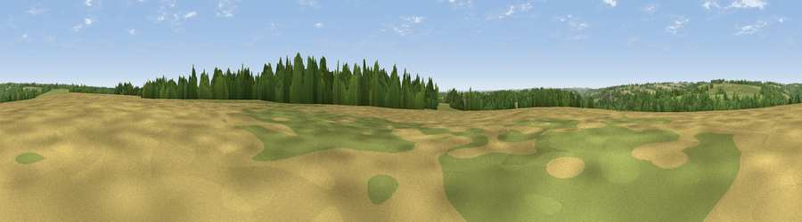

Sapperton Hill
#28245 in England · top 55% of its area beats it · near SappertonThe view, rendered

A 360° render of this exact spot computed from the terrain model, tree cover and land cover — summer colours, afternoon light, calibrated against photographs of famous viewpoints. Real trees, hedges and buildings will differ in detail.
The panorama
Grey silhouette: terrain skyline in each direction (720 bearings, Earth curvature and refraction included). Dashed green: skyline with trees (+15 m) and buildings (+8 m) as obstacles. Blue strip: how far the ground is visible on each bearing.
Where the view opens
Wedge length = distance to the farthest visible ground on that bearing (vegetation-aware). Rings at 10, 25 and 50 km.
What fills the view
39% grassland · 36% cropland · 24% woodland · 1% built-up
Angular shares of the visible panorama (visual magnitude), not map area. Landscape diversity 0.49 (0–1 Shannon).
Key numbers
More beautiful places nearby
The staircase of upgrades: each row has a higher view potential than everything closer. Driving times are estimates from straight-line distance, calibrated against real road routing — check an actual route before setting out.
| Place | Direction | Drive | Score |
|---|---|---|---|
| Viewpoint near Whiteway | NW · 6 km | ~13 min | 50.0 |
| Viewpoint near Slad | WNW · 8 km | ~16 min | 55.8 |
| Pen Hill | NNE · 10 km | ~19 min | 66.4 |
| Birdlip Hill | NNW · 11 km | ~21 min | 71.7 |
| Painswick Beacon | NW · 12 km | ~23 min | 79.6 |
| Viewpoint near Great Witcombe | NNW · 13 km | ~24 min | 80.5 |
| Nottingham Hill | N · 25 km | ~41 min | 80.9 |
| Viewpoint near Bredon's Norton | N · 36 km | ~55 min | 81.3 |
51.72910, -2.06857 · source: osm peak · position refined by local search. Computed location — check access rights before visiting.